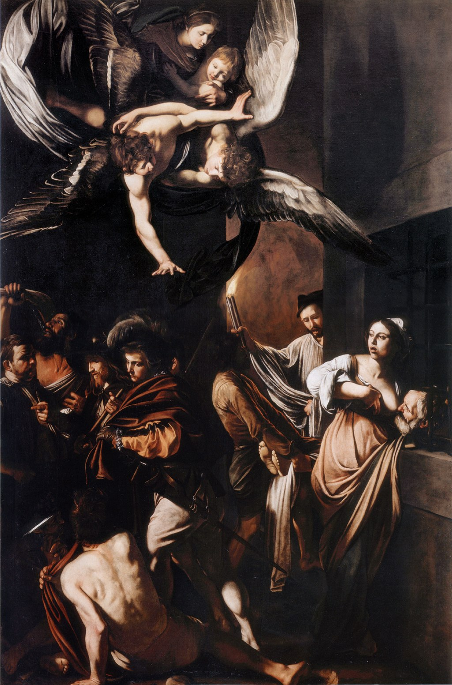

<head>
<meta charset="UTF-8" />
<meta name="keywords" content="drawing, painting" />
<meta name="description" content="drawings by Sunjy" />
<title>Sunjy</title>
<link rel="shortcut icon" type="image/x-icon" href="../../mImages/mCommon/favicon.ico" media="screen" />
<link rel="stylesheet" type="text/css" href="../../mCsses/mCommon/mCssA.css" />
<link rel="stylesheet" type="text/css" href="../../mCsses/mCommon/mCssB.css" />
<link rel="stylesheet" type="text/css" href="../../mCsses/mCommon/mCssC.css" />
<link rel="stylesheet" type="text/css" href="../../mCsses/mCommon/mCssD.css" />
<link rel="stylesheet" type="text/css" href="../../mCsses/mContent/mCssA.css" />
<link rel="stylesheet" type="text/css" href="../../mCsses/mContent/mCssB.css" />
<link rel="stylesheet" type="text/css" href="../../mCsses/mContent/mCssC.css" />
<link rel="stylesheet" type="text/css" href="../../mCsses/mContent/mCssD.css" />
</head>
<script type="text/javascript" src="../../mScripts/mContent/mContentAA.js" /></script>
<script type="text/javascript" src="../../mScripts/mContent/mContentAB.js" /></script>
<script type="text/javascript" src="../../mScripts/mContent/mContentAC.js" /></script>
<script type="text/javascript" src="../../mScripts/mContent/mContentAD.js" /></script>
<script type="text/javascript"></script> 
<script type="text/javascript">
document.write('<div class="mImgAbsolute"></div>');
/*
document.write('<p class="mFontSizeBColor" />From a white paper...</p>');
document.write('<table class="center"><tr><td>');
document.write('');
document.write('</td></tr></table>');
*/
</script>


<script type="text/javascript">
document.write('<p class="mFontSizeBColor" />The Seven Works of Mercy</p>');
document.write('<p class="mFontSizeSColor" />“The Seven Works of Mercy” by Caravaggio depicts the seven human works of mercy in traditional Catholic beliefs, which are a set of compassionate acts concerning the material needs of others.<br><br>The seven acts of mercy are represented in the painting as follows:<br>•Bury the dead: In the background, two men carry a dead man of whom only the feet are visible. One of the men is holding up a set of lit candles.<br>•Visit the imprisoned, and feed the hungry: On the right, a woman visits an imprisoned man and gives him milk from her breast. This image alludes to the classical story of Roman Charity.<br>•Shelter the homeless: A pilgrim identified by the shell on his hat asks an innkeeper, at far left, who is pointing, for shelter.<br>•Clothe the naked: St. Martin of Tours, the figure with the sword, has torn his robe in half and given it to the naked beggar, in the foreground, as told in the saint’s popular legend.<br>•Visit the sick: St. Martin comforts the beggar on the ground, who is a cripple.<br>•Refresh the thirsty: Samson, second from the left, drinks water from the jawbone of an ass. Samson used the jawbone to kill his enemies, the Philistines, and this is an unusual example of human mercy in this setting. The depiction of Sampson may have had more to do with the events Caravaggio’s life at this point in his life.<br><br>The angel at the center transmits the grace that inspires humanity’s mercy. The Madona and Christ Child are above the two angels.<br><br>The painting was made for the church of Pio Monte della Misericordia in Naples. Originally, it was meant to be seven separate panels around the church.<br><br>However, Caravaggio combined all seven works of mercy into one composition, which then became the church’s altarpiece.<br><br>Pio Monte della Misericordia<br><br>The Pio Monte della Misericordia is a church in the historic center of Naples, Italy. It is famous for its artworks, including Caravaggio’s “The Seven Works of Mercy.”<br><br>A charity brotherhood was founded in 1601 by seven young nobles, who met every Friday to minister to the sick.<br><br>In 1602 they commissioned a small church. The noblemen of the brotherhood were looking for painters to:<br><br>“give permanent visual expression to their sense of charitable mission.”<br></p>');
document.write('<table class="center" /><tr><td>');
document.write('<br>The seven acts of mercy are represented in the painting as follows:<br>•Bury the dead: In the background, two men carry a dead man of whom only the feet are visible. One of the men is holding up a set of lit candles.<br>•Visit the imprisoned, and feed the hungry: On the right, a woman visits an imprisoned man and gives him milk from her breast. This image alludes to the classical story of Roman Charity.<br>•Shelter the homeless: A pilgrim identified by the shell on his hat asks an innkeeper, at far left, who is pointing, for shelter.<br>•Clothe the naked: St. Martin of Tours, the figure with the sword, has torn his robe in half and given it to the naked beggar, in the foreground, as told in the saint’s popular legend.<br>•Visit the sick: St. Martin comforts the beggar on the ground, who is a cripple.<br>•Refresh the thirsty: Samson, second from the left, drinks water from the jawbone of an ass. Samson used the jawbone to kill his enemies, the Philistines, and this is an unusual example of human mercy in this setting. The depiction of Sampson may have had more to do with the events Caravaggio’s life at this point in his life.<br><br>The angel at the center transmits the grace that inspires humanity’s mercy. The Madona and Christ Child are above the two angels.<br><br>The painting was made for the church of Pio Monte della Misericordia in Naples. Originally, it was meant to be seven separate panels around the church.<br><br>However, Caravaggio combined all seven works of mercy into one composition, which then became the church’s altarpiece.<br><br>Pio Monte della Misericordia<br><br>The Pio Monte della Misericordia is a church in the historic center of Naples, Italy. It is famous for its artworks, including Caravaggio’s “The Seven Works of Mercy.”<br><br>A charity brotherhood was founded in 1601 by seven young nobles, who met every Friday to minister to the sick.<br><br>In 1602 they commissioned a small church. The noblemen of the brotherhood were looking for painters to:<br><br>“give permanent visual expression to their sense of charitable mission.”<br>" />');
document.write('</td></tr></table>');
</script>


